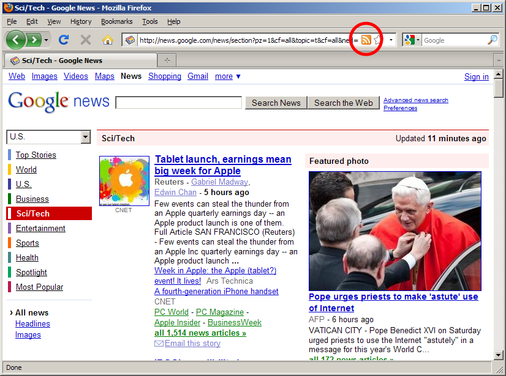
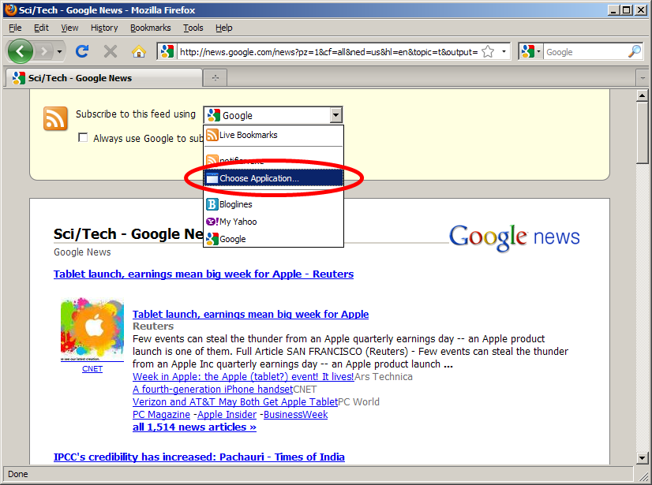
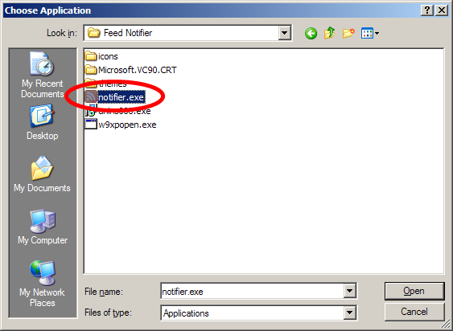
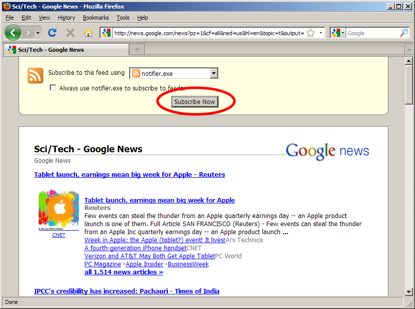
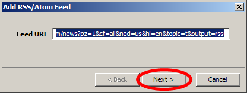
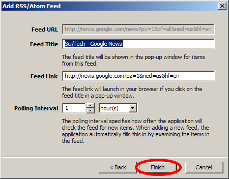

Go to a website that you frequently visit to check for updates, even though an app could do it for you. Hopefully it will have an RSS feed. If it does, Firefox will display an RSS icon in the address bar. Click on it.
Note: Some websites don't include the proper code to make the icon appear in the address bar even though they have an RSS feed. Look around on the webpage itself for an RSS icon.

Once you click on the RSS icon, Firefox will show the contents of the feed. At the top will be some controls to let you register the feed in an external application. From the drop-down menu, select "Choose Application..."
Note: You only have to do Steps 2 and 3 once!

Browse to the location where you installed Feed Notifier. It will probably be:
C:\Program Files\Feed Notifier\notifier.exe

Click the "Subscribe Now" button. Firefox will send the link to Feed Notifier.

You should see Feed Notifier pop up this window to add a new feed. If not, look underneath other windows. Click "Next"

Configure the feed properties if you want, or just click "Finish"
